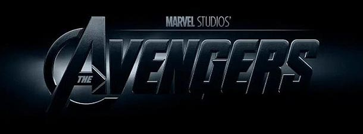

The Avengers are a fictional team of superheroes appearing in American comic books published by Marvel Comics. The team made its debut in The Avengers #1 (cover-dated Sept. 1963), created by writer-editor Stan Lee and artist/co-plotter Jack Kirby. Labeled "Earth's Mightiest Heroes", the Avengers originally consisted of Iron Man, Ant Man, Hulk, Thor and Wasp. The original Captain America was discovered trapped in ice in issue #4, and joined the group after they revived him.
A rotating roster became a hallmark of the series, although one theme remained consistent: the Avengers fight "the foes no single superhero can withstand." The team, famous for its battle cry of "Avengers Assemble!", has featured humans, superhumans, mutants, Inhumans, deities, androids, aliens, legendary beings, and even former villains.
The Avengers have appeared in a wide variety of media outside of comic books, including several different animated television series and direct-to-video films. The Avengers also play a central role in the Marvel Cinematic Universe (MCU) being the focus in multiple MCU feature films, beginning with the eponymous 2012 live-action film, The Avengers, and followed by the sequels Age of Ultron (2015), Infinity War (2018), and Endgame (2019), the latter two of which were based on The Infinity Gauntlet storyline. The Avengers also featured in Captain America: Civil War (2016), which drew loosely from the Civil War storyline. Individual members of the team also have standalone franchises, such as Iron Man, Thor, Captain America and Ant-Man.
The Marvel Cinematic Universe (MCU) is an American media franchise and shared universe centered on a series of superhero films, independently produced by Marvel Studios and based on characters that appear in American comic books published by Marvel Comics. The franchise includes comic books, short films, television series, and digital series. The shared universe, much like the original Marvel Universe in comic books, was established by crossing over common plot elements, settings, cast, and characters.
The first MCU film is Iron Man (2008), which began the films of Phase One culminating in the crossover film The Avengers (2012). Phase Two began with Iron Man 3 (2013) and concluded with Ant-Man (2015). Phase Three began with Captain America: Civil War (2016) and concluded with Spider-Man: Far From Home (2019). The first three phases in the franchise are collectively known as "The Infinity Saga". The films of Phase Four will begin with Black Widow (2021).
Marvel Television expanded the universe to network television with Agents of S.H.I.E.L.D. on ABC in 2013, followed by streaming television with Daredevil on Netflix in 2015 and Runaways on Hulu in 2017, and cable television with Cloak & Dagger on Freeform in 2018. Marvel Television produced the digital series Agents of S.H.I.E.L.D.: Slingshot. Marvel Studios themselves expanded to streaming with Disney+, starting with WandaVision in 2021 as the beginning of Phase Four. Soundtrack albums have been released for all the films and many of the television series, as well as compilation albums containing existing music heard in the films. The MCU includes tie-in comics published by Marvel Comics, while Marvel Studios has produced a series of direct-to-video short films, called Marvel One-Shots, and a viral marketing campaign for its films and the universe with the faux news program WHIH Newsfront.
The franchise has been commercially successful and has generally received a positive critical response. It has inspired other film and television studios with comic book character adaptation rights to attempt to create similar shared universes. The MCU has been the focus of other media, outside of the shared universe, including attractions at various Walt Disney Parks and Resorts, an attraction at Discovery Times Square, a Queensland Gallery of Modern Art exhibit, two television specials, guidebooks for each film, multiple tie-in video games, and commercials.